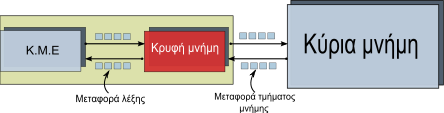

CACHE

Στην πληροφορική και στην ηλεκτρονική μηχανική κρυφή μνήμη (cache, προφέρεται «κας») καλείται η μνήμη υπολογιστή η οποία
αποθηκεύει μία συλλογή από δεδομένα, τα οποία αποτελούν αντίγραφα τιμών που βρίσκονται κάπου αλλού. Το γνωστότερο
παράδειγμα κρυφής μνήμης είναι η κρυφή μνήμη του επεξεργαστή, η οποία μεσολαβεί μεταξύ της κεντρικής μνήμης RAM και
της Κεντρικής Μονάδας Επεξεργασίας (ΚΜΕ). Η διαφορά με την προσωρινή μνήμη (buffer) είναι ότι αυτή ορίζεται από το
λειτουργικό σύστημα ή από ένα πρόγραμμα, ενώ η κρυφή μνήμη έχει προκαθορισμένο το υλικό της μέρος. Δηλαδή η προσωρινή
μπορεί να είναι τμήμα του σκληρού δίσκου ή της RAM, ενώ η κρυφή μνήμη της ΚΜΕ είναι κατασκευασμένη και αποτελεί φυσικό
και ανεξάρτητο τμήμα. Στη γενικότερη περίπτωση, όταν μιλούμε για κρυφή μνήμη υπάρχει μία ενεργή οντότητα που τα
χρειάζεται και ενεργεί πάνω στα δεδομένα, ενώ από την άλλη μία περιοχή αποθήκευσης η οποία περιέχει τα δεδομένα των
οποίων αντίγραφα τοποθετήσαμε στην κρυφή μνήμη.
Η χρησιμότητα της κρυφής μνήμης είναι ορατή στην περίπτωση που ο χρόνος πρόσβασης της ενεργούς οντότητας πάνω στα
αυθεντικά δεδομένα είναι πολύ υψηλός σε σχέση με την πρόσβαση σε μια κρυφή μνήμη όπου τοποθετούμε αντίγραφα, αλλά
από την άλλη αυτή η γρήγορη περιοχή αποθήκευσης έχει υψηλό κόστος κατασκευής. Έτσι, π.χ., σε έναν ηλεκτρονικό υπολογιστή
ένα πρόγραμμα είναι αποθηκευμένο στην κύρια μνήμη, αλλά ο επεξεργαστής κατά την εκτέλεση της εφαρμογής τείνει για ένα
σημαντικό ποσοστό της συνολικής χρονικής διάρκειας εκτέλεσης του προγράμματος να περιορίζεται σε μικρά υποσύνολα εντολών
του προγράμματος (κάτι αναμενόμενο αφού τα προγράμματα περιέχουν βρόχους επανάληψης, ειδάλλως θα τερμάτιζαν σε πολύ
μικρό χρόνο). Αυτό το φαινόμενο καλείται αρχή της τοπικότητας. Η κρυφή μνήμη της ΚΜΕ, ταχύτερη και πιο ακριβή από την
κύρια μνήμη, αλλά και πολύ πιο μικρή σε μέγεθος (ώστε να περιορίζεται το κόστος), εκμεταλλεύεται την αρχή της τοπικότητας
ώστε να αυξάνει σημαντικά στην πλειονότητα των περιπτώσεων τις υπολογιστικές επιδόσεις του συστήματος (να εκτελούνται
ταχύτερα τα προγράμματα), αφού τα υποσύνολα των εντολών και των δεδομένων του προγράμματος τα οποία εκτελούνται συχνά
προσκομίζονται στην κρυφή μνήμη, με αποτέλεσμα για σημαντικό χρόνο να επιτυγχάνεται απόδοση παρόμοια με αυτή ενός
υπολογιστή ο οποίος διαθέτει μόνο την γρήγορη, αλλά ακριβή, κρυφή μνήμη.
Στην κατανόηση της βασικής λειτουργίας της κρυφής μνήμης μπορεί να βοηθήσει η αναλογία με τη χρήση του ψυγείου σε μια κουζίνα.
Ο μάγειρας πρέπει σε καθημερινή βάση να παράγει κάποια φαγητά. Αν δεν είχε ψυγείο θα έπρεπε πιο συχνά να βγαίνει για να
αγοράσει, π.χ. τα κρέατα, κάτι που θα μείωνε την αποδοτικότητά του, ενώ με τη βοήθεια του ψυγείου μπορεί να προμηθευτεί
τα υλικά, π.χ. για μια εβδομάδα, εξοικονομώντας χρόνο. Άρα ο υπολογιστής θα αποκτά μεγαλήτερη ταχύτητα στο άνοιγμα των
προγραμάτων με την μνήμη CACHE.